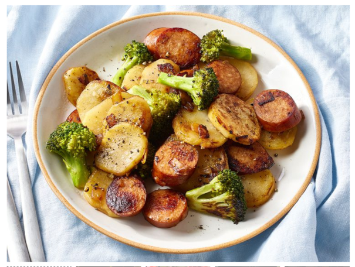

Ingredientes
- spray de cozinha (ou óleo em spray para untar)
- ½ cebola picada
- 1 pacote (16 onças) de salsicha kielbasa, fatiada
- 3 batatas, descascadas e fatiadas
- ½ cabeça de brócolis, cortado em floretes
- sal e pimenta-do-reino moída a gosto
Passos
- separe os ingredientes em recipientes
- Borrifé uma frigideira grande com spray de cozinha e aqueça em fogo médio-baixo. Adicione a cebola e cozinhe, mexendo de vez em quando, até que ela fique macia e translúcida, cerca de 5 minutos. Acrescente a salsicha kielbasa e frite até que fique levemente dourada, mexendo ocasionalmente, por cerca de 5 minutos adicionais.
- Acrescente as batatas e o brócolis, e tempere com sal e pimenta. Cozinhe, sem mexer, até que o brócolis comece a amolecer, cerca de 15 minutos.
- Misture bem e continue cozinhando até que os vegetais fiquem completamente macios, por mais 10 a 15 minutos.